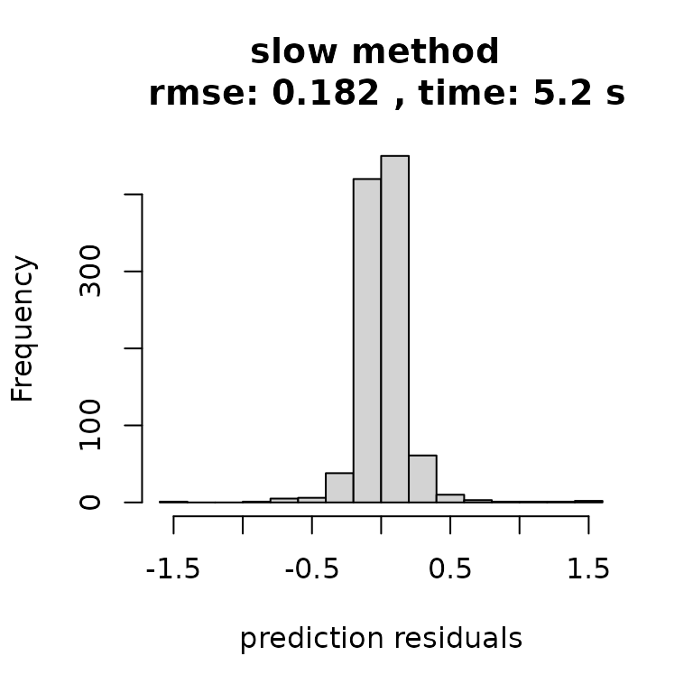

This page is designed to explain how outerbase can facilitate fast inference with smart modeling choices.
This is important as the sample size grows, so we will use 500 datapoints.
sampsize = 500
d = 8
x = matrix(runif(sampsize*d),ncol=d)
y = obtest_borehole8d(x)The differences get more dramatic with larger sample sizes, however in the spirit of running quickly we will use this sample size.
First setup an outermod object.
om = new(outermod)
setcovfs(om, rep("mat25pow",8))
knotlist = list();
for(k in 1:d) knotlist[[k]] = seq(0.01,1,by=0.025)
setknot(om, knotlist) #40 knot point for each dimMore data should mean more basis functions.
p = 250
terms = om$selectterms(p)Different models
To begin, lets use ?loglik_std to represent our slow approach.
loglik_slow = new(loglik_std, om, terms, y, x)
logpr_slow = new(logpr_gauss, om, terms)
logpdf_slow = new(lpdfvec, loglik_slow, logpr_slow)logpdf_slow can be optimized using lpdf$optnewton.
logpdf_slow$optnewton()Newton’s method involves solving a linear system, thus it takes one step, but is expensive.
?loglik_gauss is a lpdf model designed for speed. It is a nice comparison because loglik_gauss uses the same model as loglik_std, with a few approximations for speed.
loglik_fast = new(loglik_gauss, om, terms, y, x)
logpr_fast = new(logpr_gauss, om, terms)
logpdf_fast = new(lpdfvec, loglik_fast, logpr_fast)logpdf_fast will through an error if you try to use optnewton. This is because it is written so that it never builds a hess matrix.
logpdf_fast$optnewton()
#> Error in logpdf_fast$optnewton(): addition: incompatible matrix dimensions: 0x0 and 250x250It is suggested to use lpdf$optcg (conjugate gradient) to optimize the coefficients in the fast version.
logpdf_fast$optcg(0.001, 100)As an aside, omp speed ups are possible, but you need to have correctly compiled with omp. One check is to call the following.
ob = new(outerbase, om, x)
ob$nthreads
#> [1] 2If the answer is 1 but you have a multi-threaded processor (most modern processors), things are likely mis-aligned.
You can manually set the number of threads for lpdf objects.
logpdf_slow$setnthreads(4)
logpdf_fast$setnthreads(4)Timing
The main cost with models like these is hyperparameter optimization. Thus will we show the difference in time to build hyperparameters. Let’s save starting points (since they share om) for fairness.
hyp0_slow = list(para = getpara(logpdf_slow), hyp = gethyp(om))
hyp0_fast = list(para = getpara(logpdf_fast), hyp = gethyp(om))Test points will verify the predictions are equally good with either model, the only difference is speed.
xtest = matrix(runif(1000*d),ncol=d) #prediction points
ytest = obtest_borehole8d(xtest)We will use the unsophisticated proc.time to do some quick timing comparisons.
Comparison of results
And simply plotting the results tells the story: faster inference with no discernible dropoff in quality.
par(mfrow=c(1,2))
rmse_slow = sqrt(mean((ytest-yhat_slow)^2))
hist((ytest-yhat_slow), main=paste("slow method \n rmse:",
round(rmse_slow,3),
", time:",
round(t_slow[3],2),'s'),
xlab = "prediction residuals")
rmse_fast = sqrt(mean((ytest-yhat_fast)^2))
hist((ytest-yhat_fast), main=paste("fast method \n rmse =",
round(rmse_fast,3),
", time:",
round(t_fast[3],2),'s'),
xlab = "prediction residuals")